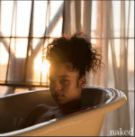

Hey There!
Welcome to the roller coaster ride of my Developer Journey
unedited, please have grace
Month[0] Learnings
-
It is really hard to believe that I have only been attending Ada for roughly a month. The biggest learning during this time was about myself. I think I learned more about myself than I did programming concepts. Please do not tell Dan! I honestly think it is true. I attended college and even have a masters but, neither of those experiences prepared me for Ada. There is so much material to learn in such little time.
What I learned about myself
I learned how I deal with stress (intense stress). I learned that the type of learner I thought I was was very inaccurate. I also learned that I have a lot of pride in knowing things and when I do not know something it is really hard for me to admit it to myself and ask for help without feeling ashamed that I should know it. I learned a whole lot more about myself but, there is no time to go into all the details.
A few things that have occured during these past few weeks.
I have lost track of the days and sometime the month.
I only manage to work out one day a week
Coffee does not keep me up during long lectures
Refocusing is only successful with meditation
When I have the urge to cry just let it out because holding it in only makes you feel worst
Self-care
- What is self care?
-
So many people say self care if important, make sure you are taking care of yourself. However, self care can literally be anything. Which makes it really hard for me to find it, define it any actually do it.
I have said week after week I am going to do some self care on Thursdays when we have early release. But, all I have done so far is stay working on things, or going home to go to sleep.
Sleep is officially my self care I'd love to get a massage, or go to a spa get in a jaccuzi but, the work it takes to find those places and actually pay for them is too much.
I will stick with extra sleep for the following reasons
I can never get enough sleep
Most days I am up after midnight
sleep is good for my brain
I am a nicer person with sleep
If I have enough sleep I do not need coffee
Everything costs money! Sleep is free and can essentially be done anywhere
Music on Repeat
-
If you've read the about me page then you already know I love music!
The reason I love music so much is because there are so many genres, artists, beats etc. no matter how you are feeling excited sad angry frustrated etc. I guarantee there is a song that will either help you sulk if that's what your into or make you feel better
Depending on the day I need different music to either keep me focused, encouraged, relaxed, or hyped.
Below is some of the music that I've had on repeat the past few weeks
Classical playlist
Janelle Monae - Make Me Feel
Ella Mai - Naked
Nipsey Hussle - Victory Lap